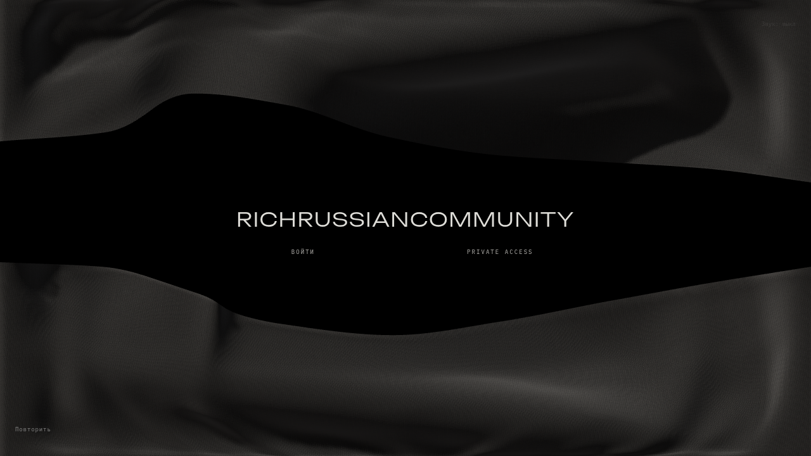
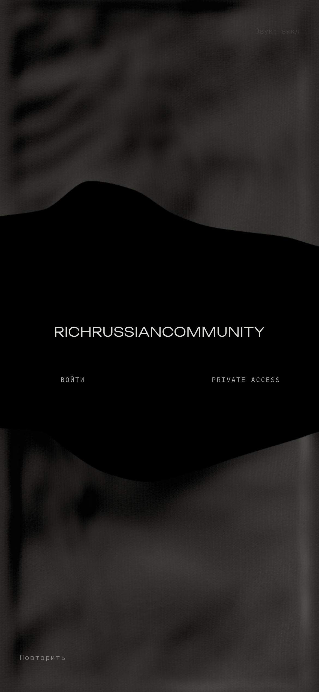

Архивный вариант. Актуальная ткань, кадры и видео · Текущий отчёт
RICHRUSSIANCOMMUNITY / CLOTH
Физическая офлайн-драпировка, фотографический источник шерстяной смеси и связанное с тканью движение ножниц. Это кадры работающего сайта.
Новый финал

Desktop
Mobile / эмуляцияПредыдущая версия
Хореография
Покадровый захват Chromium с управляемыми часами, 24 кадра/с. Не тест производительности.
Нативная запись
Оба захвата мышьюОба захвата касанием в эмуляции
Программный GPU SwiftShader не достигает целевого ритма. Реальный телефон не тестировался. Полное совпадение с фотографией не заявлено.
Проверки, исходники, лицензии, замеры и ограничения